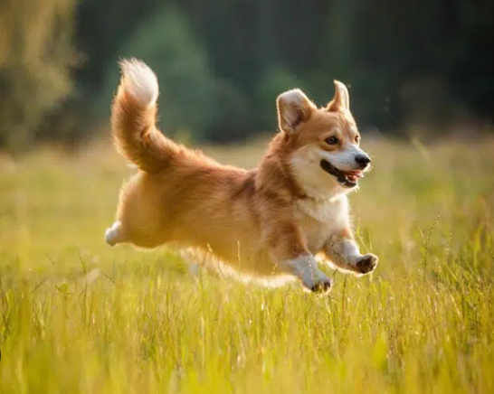
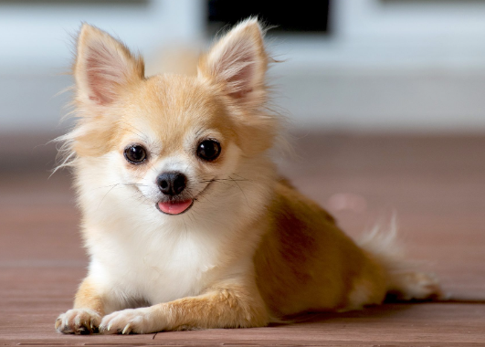

| Image | Breed | Description |
|  | Welsh Corgi | The Pembroke Welsh Corgi is a strong, athletic, and lively little herder who is affectionate and companionable without being overly dependent. The Pembroke is a bright, sensitive dog who enjoys playing with humans and learns quickly. They are fearless and independent |
 |
Golden Retriever | The Golden Retriever is a medium-sized retriever dog from Scotland. It has a gentle and affectionate personality, as well as a striking golden coat. It is popular as a pet and is one of the most commonly registered breeds in several Western countries. |
|  | Chihuahua | Chihuahuas are charming, intelligent, and sassy. Chihuahuas are beloved by owners for their unique appearance and entertaining attitudes despite their small size. |